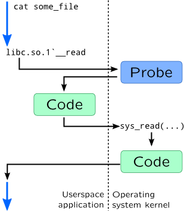

Userspace process tracing
We had covered kernel organization in detail in previous chapter, but it would be useless without userspace application that services end-user requests. It can be either simple cat program which we used in many previous examples to complex web application which uses web server and relational database. Like with the kernel, DTrace and SystemTap allow to set a probe to any instruction in it, however it will require additional switch to kernel space to execute the code. For example, let's install probe on a read() call on the side of standard C library:

In DTrace userspace tracing is performed through pid provider:
pid1449:libc:__read:entryIn this example entry point of
__read() function from standard C library is patched for process with PID=1449. You may use return as name for return probes, or hexadecimal number -- in this case it will represent an instruction offset inside that function.
If you need to trace binary file of application itself, you may use a.out as module name in probe specification. To make specifying PID of tracing process easier, DTrace provides special macro $target which is replaced with PID passed from -p option or with PID of command which was run with -c option:
# dtrace -n '
pid$target:a.out:main:entry {
ustack();
}' -c cat
Userspace probes are created with process().function() syntax in SystemTap, where process contains path of shared library or executable binary which should be traced. This syntax is similar to kernel syntax (as described in Probes): it supports specifying line numbers, source file names, .statement() and .return probes:
# stap -e '
probe process("/lib64/libc.so.6").function("*readdir*") {
print_ubacktrace();
}' -c ls -d /usr/bin/ls
Unlike DTrace, in SystemTap any process which invokes readdir() call from standard C library will be traced. Note that we used -d option so SystemTap will recognize symbols inside ls binary. If binary or library is searchable over PATH environment variable, you may omit path and use only library name:
# export PATH=$PATH:/lib64/
# stap -e '
probe process("libc.so.6").function("*readdir*") {
[...] }' ...
SystemTap uses uprobes subsystem to trace userspace processes, so CONFIG_UPROBES should be turned on. It was introduced in Linux 3.5. Before that, some kernels (mostly RedHat derivatives) were shipped with utrace which wasn't supported by vanilla kernels. It is also worth mentioning that like with kernel tracing, you will need debug information for processes you want to trace that is shipped in -debuginfo or -dbg packages.
Like with kernel probes, you may access probe arguments using arg0-argN syntax in DTrace and $arg_name syntax in SystemTap. Probe context is also available. Accessing data through pointers however, would require using copyin() functions in DTrace and user_<type>() functions in SystemTap as described in Pointers section.
Warning
Tracing multiple processes in DTrace is hard -- there is no -f option like in truss. It is also may fail if dynamic library is loaded through dlopen(). This limitations, however, may be bypassed by using destructive DTrace actions. Just track required processes through process creation probes or dlopen() probes, use stop() to pause process execution and start required DTrace script. dtrace_helper.d from JDK uses such approach.
User Statically Defined Tracing
Like in Kernel mode, DTrace and SystemTap allow to add statically defined probes to a user space program. It is usually referred to as User Statically Defined Tracing or USDT. As we discovered for other userspace probes, DTrace is not capable of tracking userspace processes and automatically register probes (as you need explicitly specify PID for pid$$ provider). Same works for USDT -- program code needs special post-processing that will add code which will register USDT probes inside DTrace.
SystemTap, on contrary, like in case of ordinary userspace probes, uses its task finder subsystem to find any process that provides a userspace probe. Probes, however are kept in separate ELF section, so it also requires altering build process. Build process involves dtrace tool which is wrapped in SystemTap as Python script, so you can use same build process for DTrace and SystemTap. Building simple program with USDT requires six steps:
-
You will need to create a definition of tracing provider (and use
.dsuffix to savei it). For example:provider my_prog { probe input__val(int); probe process__val(int); };Here, providermy_progdefines two probesinput__valandprocess__val. These probes take single integer argument.
-
(optional) Than you need to create a header for this file:
# dtrace -C -h -s provider.d -o provider.h
-
Now you need to insert probes into your program code. You may use generic
DTRACE_PROBEnmacros (in DTrace, supported by SystemTap) orSTAP_PROBEnmacros (in SystemTap) from<sys/sdt.h>header:DTRACE_PROBEn(provider-name, probe-name, arg1, ...);
Or you may use macros from generated header:MY_PROG_INPUT_VAL(arg1);
If probe argument requires additional computation, you may use enabled-macro, to check if probe was enabled by dynamic tracing system:
if(MY_PROG_INPUT_VAL_ENABLED()) {
int arg1 = abs(val);
MY_PROG_INPUT_VAL(arg1);
}
In our example, program code will look like this:
#includeint main() { int val; scanf("%d", &val); DTRACE_PROBE1(my_prog, input__val, val); val *= 2; DTRACE_PROBE1(my_prog, process__val, val); return 0; }
-
Compile your source file:
# gcc -c myprog.c -o myprog.o
-
You will also need to generate stub code for probe points or additional ELF sections, which is also performed by
dtracetool. Now it has to be called with-Goption:# dtrace -C -G -s provider.d -o provider.o myprog.o
-
Finally, you may link your program. Do not forget to include object file from previous step:
# gcc -o myprog myprog.o provider.o
Name of a probe would be enough to attach an USDT probe with DTrace:
# dtrace -n '
input-val {
printf("%d", arg0);
}'
Full name of the probe in this case will look like this: my_prog10678:myprog:main:input-val. Module would be name of the executable file or shared library, function is the name of C function, name of probe matches name specified in provider except that double underscores __ was replaced with single dash -. Name of the provider has PID in it like pid$$ provider does, but unlike it you can attach probes to multiple instances of the program even before they are running.
USDT probes are available via process tapset:
# stap -e '
probe process("./myprog").mark("input__val") {
println($arg1);
}'
Full name of the probe will use following naming schema:
process("path-to-program").provider("name-of-provider").mark("name-of-probe")
Note that unlike DTrace, SystemTap won't replace underscores with dashes
To implement probe registration, Solaris keeps it in special ELF section called .SUNW_dof:
# elfdump ./myprog | ggrep -A 4 SUNW_dof
Section Header[19]: sh_name: .SUNW_dof
sh_addr: 0x8051708 sh_flags: [ SHF_ALLOC ]
sh_size: 0x7a9 sh_type: [ SHT_SUNW_dof ]
sh_offset: 0x1708 sh_entsize: 0
sh_link: 0 sh_info: 0
sh_addralign: 0x8
Linux uses ELF notes capability to save probes information:
# readelf -n ./myprog | grep stapsdt stapsdt 0x00000033 Unknown note type: (0x00000003) stapsdt 0x00000035 Unknown note type: (0x00000003)
Because of the nature of DTrace probes which are registered dynamically, they could be generated dynamically. We will see it in JSDT. Another implementation of dynamic DTrace probes is libusdt library.
References